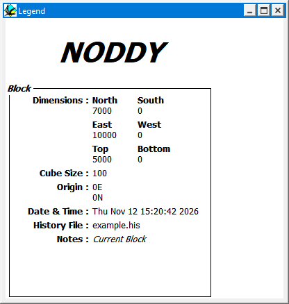

Legend window
This window, accessible from the Window menu, provides background information for all geological and geophysical visualisations, as well as providing a means of including a company logo within the title information. The nature of the information varies according to which window is selected, and includes a variety of information such as the file used to create the visualisation, the time and date of creation, the current stereonet, stratigraphic column, look up table and scale bar.
The legend window updates automatically as each window is selected, and some information, such as the scale bar, are updated each time a change is made to the associated window (for example changing the size of a gravity image changes the length of the scale bar).
A company logo may be placed in the top left hand corner by placing a BMP format image named complogo.bmp in the same directory as the Noddy exectuable.

Noddy · open source under the MIT licence · Loop3D/noddy_qt